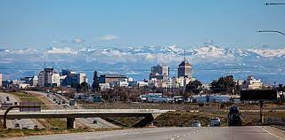

Blog Post One
Posted by Vi on May 27th
This first one is for my home country, Vietnam. In the picture, it is a city of Vietnam named Ho Chi Minh City, and it is also the city where I was born and grew up. It is a great city to me with friendly, kind and humorous people. I have been far from it for 2 years already. I am not only missing it but also missing the people, my family and friends in Vietnam.
Blog Post Two
Posted by Vi on May 27th

I am currently living in Fresno right now. It is a beautiful city of California, US. Fresno is famous for being in the top agriculture cities of California. Therefore, we can see flowers and trees in every single street we pass by. That is the lovely of Fresno, flowers and trees. It is also near by the famous Yosemite National Park.
Blog Post Three
Posted by Vi on May 27th

I love tacos. My first time tried it was just two years ago, but I fell in love with this food. There are a lot of kinds of meat we can choose for a taco such as Carnitas, Al pasto, Lengua. I tried taco trucks in every city I traveled to, and I am willing to travel more. Try tacos if you haven't :).
Blog Post Four
Posted by Vi on May 27th

I love basketball! My first time playing basketball for a team was in high school. I wanted to be a professional basketball athlete in my home country. I love the feeling to be in a group/team, make connections with another teammates and fight for the goal we all head to together.